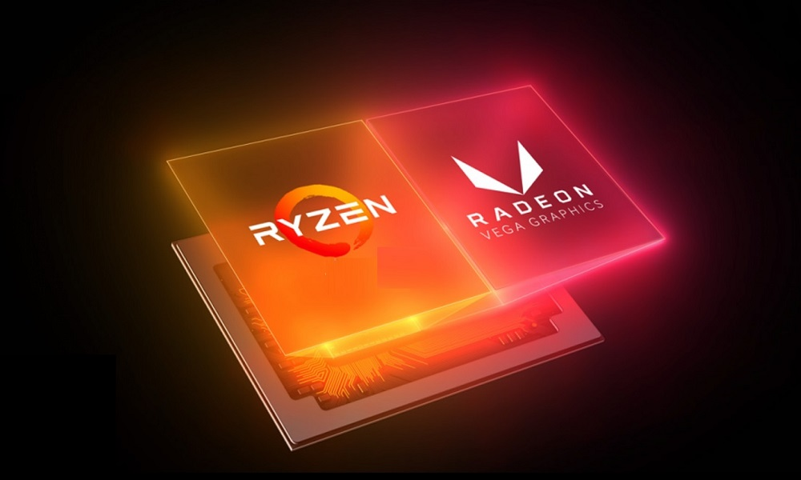
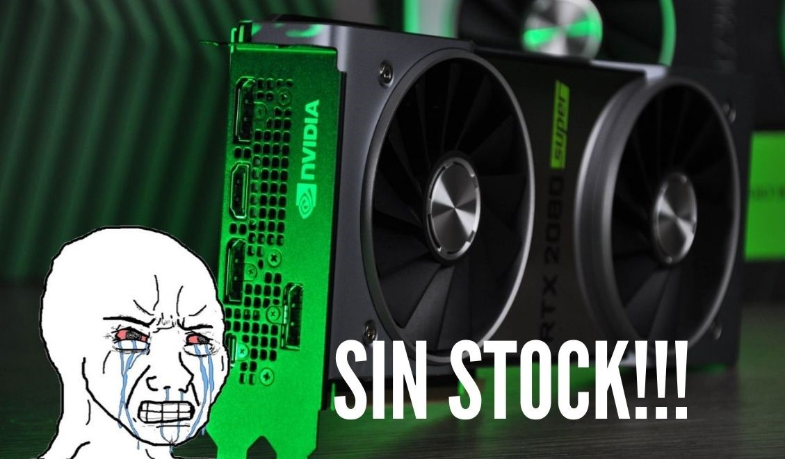
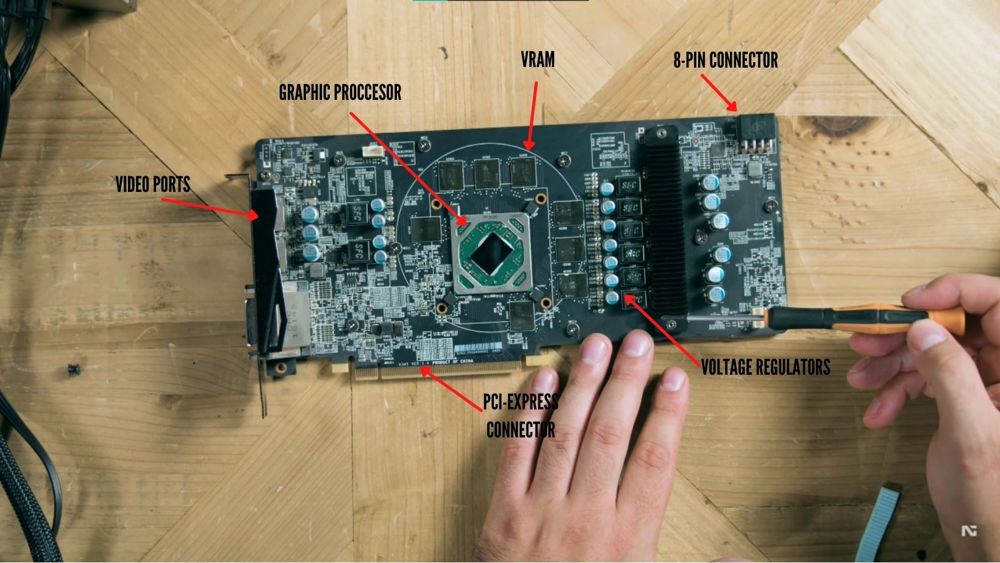
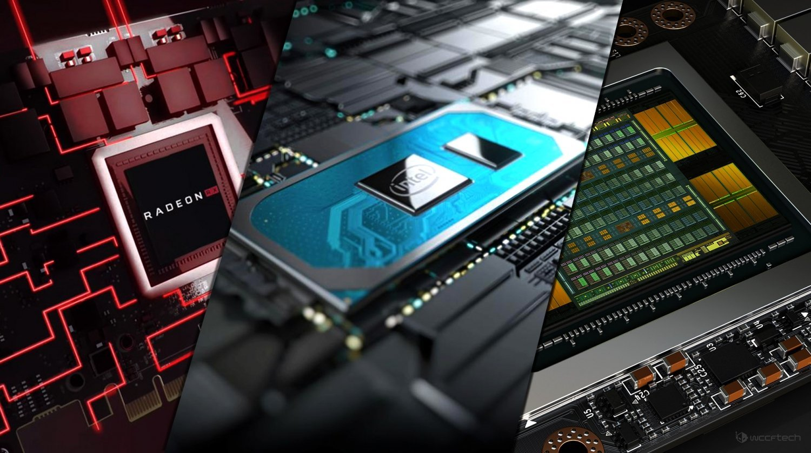

¿Que es, que hace y para que sirve?
Una unidad de procesamiento gráfico o GPU (graphics processing unit) es un coprocesador dedicado al procesamiento de gráficos u operaciones de coma flotante, para aligerar la carga de trabajo del procesador/CPU central en aplicaciones como los videojuegos o aplicaciones 3D interactivas. De esta forma, mientras gran parte de lo relacionado con los gráficos se procesa en la GPU, la unidad central de procesamiento (CPU) puede dedicarse a otro tipo de cálculos (como la inteligencia artificial o los cálculos mecánicos en el caso de los videojuegos).
La GPU implementa ciertas operaciones gráficas llamadas primitivas optimizadas para el procesamiento gráfico. Una de las primitivas más comunes para el procesamiento gráfico en 3D es el antialiasing, que suaviza los bordes de las figuras para darles un aspecto más realista. Adicionalmente existen primitivas para dibujar rectángulos, triángulos, círculos y arcos. Las GPU actualmente disponen de gran cantidad de primitivas, buscando mayor realismo en los efectos.
Las GPU están presentes en las tarjetas gráficas.
Tipos de Graficas
Tarjetas integradas
Estas se pueden encontrar tanto integradas en la placa como en el propio procesador, motivo por el cual emplean la memoria del sistema para desarrollar su funcionamiento. Tienen una seccion exclusivamente dedicada a los graficos, tiene una arquitectura distinta, pensada exclusivamente para generar estas imagenes de pixeles.
Tarjetas dedicadas
Este tipo de unidad grafica tiene asignadas una serie de funciones especificas y esta diseñada para cumplir expresamente con ellas. Su principal caracteristica es que posee una memoria RAM independiente a la de la computadora.
La tarjeta grafica dedicada esta en una placa hija(Poner foto explicando partes de la grafica, VRM, Por donde le llega la corriente etc)
¿Como funciona una grafica?
El procesador le envia la orden de que genere una imagen, y esta se encarga de sacar la matriz de pixeles que envia a traves del cable HDMI,VGA.DVI o Displayport al monitor a una frecuencia concreta (normalmente 60 imagenes por segundo).
Cuando queremos hacer algo mas como jugar videojuegos, en las cuales tenemos imagenes poligonales que se transforman en imagenes planas y que se muestran por pantalla, o por ejemplo programas especiales de diseño 3D, efectos especiales o edicion de evideo que son cosas que van a necesitar un poco mas de potencia de la que nos puede dar la grafica integrada que tenemos en el procesador.
Funcionamiento Interior
Tecnologias implementadas en la GPU
La tecnologia de Shaders
Los shaders son un tipo especial de programa que se ejecuta en unidades de procesamiento gráfico (GPU) .

La salida del shader son los pixels colorados del objeto dibujado en la vista. Algunos shaders permiten salidas especializadas (especialmente con los APIs como Vulkan). El proceso estandar es el canal de shader «vértice -> frgament». El shader vértive se usa para calcular dónde se ubica cada vértice (un punto en un modelo 3D) y el shader fragment calcula el color de los pixels individuales.
La tecnologia de Antiliasing
El Anti-Aliasing no es sino un filtro de postprocesado, y que por tanto se realiza después de generar la imagen, el cual suaviza estos dientes de sierra de manera que las líneas que no son verticales u horizontales parezcan más homogéneas, eliminando o al menos mitigando este efecto de escalones.
Si tenemos un ordenador de gama alta, con una buena tarjeta gráfica, podemos utilizar como antialiasing el SSAA o el MSAA. Estos son los más extendidos y los que mejor calidad nos van a dar en los gráficos que tengamos más cerca de la pantalla.
Tecnologia del Raytraicing o RTX
Ray tracing es una tecnología desarrollada por NVIDIA que se encarga de mejorar las iluminaciones, sombras y reflejos de los videojuegos. En español, ray tracing significa “trazado de rayos” y hace referencia a un cálculo mucho más preciso de las iluminaciones del juego que impactan en los reflejos y sombras
Con este algoritmo, las escenas se ven mucho más realistas, razón por la cual ha supuesto una revolución para la comunidad gamer.
NVIDIA comenzó a desarrollar la tecnología hace varios años, pero no fue hasta 2018 que salieron sus primeras tarjetas con ray tracing.Es muy fácil reconocer las gráficas que tienen este algoritmo porque la empresa cambió la nomenclatura, de forma tal que ahora sus siglas son RTX.
Que es el SLI y CrossFire
Son dos herramientas que fueron creadas para el uso de NVIDIA y AMD respectivamente y que poseen sus orígenes en las configuraciones multiGPU que se utilizaban con Voodoo 2.
SLI que proviene de las siglas Scan Line Interleave actúa de una manera sencilla, utiliza dos tarjetas en paralelo con un balance de la carga de trabajo 50 y 50 que permite incluso dividir la pantalla en dos.
Es una herramienta un poco antigua, que requería doblar la potencia de renderizado, dejando fuera la memoria para texturas debido a que cada tarjeta gráfica requiere duplicar los datos del espacio en el que se está desempeñando.
Actualmente el modo SLI es empleado por soluciones gráficas de NVIDIA, mientras que el CrossFire es el que se utiliza en AMD tal como comentábamos anteriormete. En concreto ambos términos se refieren a un modo de uso de dos o más tarjetas gráficas que se colocan para trabajar de forma conjunta y simultánea en un mismo ordenador o sistema. Actualmene estas tecnologias estan casi en deshuso ya que ahora las tarjetas graficas son tan potentes que no es necesaria usarla, ademas de que muchos programas y juegos ya no implementan esta teccnologia.
Donde si podemos ver que se sigue usando es las estaciones de minado de cryptomonedas.
¿En que se diferencia el núcleo de una GPU del de una CPU?

La diferencia principal es que las CPUs están sobretodo diseñadas para el paralelismo a nivel de instrucción, mientras que las GPUs están especializadas en el paralelismo a nivel de hilo.
El paralelismo a nivel de instrucción lo que busca es reducir el tiempo de instrucción de un programa a base de que se ejecuten varias instrucciones del mismo de manera simultánea. Los núcleos basados en el paralelismo a nivel de hilo cogen varios programas al mismo tiempo y los ejecutan en paralelo.
Como funcionan los nucleos CUDA.
¿Qué elementos integran la GPU?
Existen una serie de elementos comunes que utilizan tanto las GPUs de NVIDIA como las GPUs de AMD, y que son fundamentales para que una GPU pueda desarrollar su trabajo.
- Unidades SM o Compute Units:
- NVIDIA utiliza las primeras, AMD las segundas. Cada unidad integra un conjunto de motores de sombreado, unidades de textura, unidades de rasterizado y, en función de la arquitectura, núcleos especializados para trazado de rayos e inteligencia artificial. Son la base de cualquier GPU.
- Motores de sombreado:
- También conocidos como shaders. Se ocupan de realizar la carga de trabajo asociada a tareas tan importantes como la transformación de la geometría, tanto a nivel de color como de sombreado y de otros efectos (iluminación, neblina, reflejos, étc).
- Unidades de rasterizado:
- Más conocidos como ROPs. Realizan el proceso necesario para que una imagen, sea convertida en un conjunto de píxeles perfectamente ordenados que se escriben en el framebuffer, desde el cual serán transmitidos de forma directa a la pantalla. También llevan a cabo operaciones importantes asociadas a la aplicación de filtros y técnicas de suavizado (MSAA, por ejemplo)..
- Unidades de texturizado:
- Estas se ocupan de aplicar un mapeado de texturas a la geometría.
- Núcleos RT:
- Dedicados a acelerar el procesado de la carga de trabajo relacionada con el trazado de rayos. Estos núcleos fueron introducidos en 2018, y se centran en calcular las intersecciones transversales BVH, las intersecciones rayo-triángulo y a las intersecciones de delimitadoras de cuadro.
- Núcleos tensor:
- estos núcleos también son algo relativamente nuevo. Solo se utilizan en las tarjetas gráficas NVIDIA basadas en la arquitectura Volta, Turing y Ampere. Están especializados en cargas de trabajo centradas en inferencia, inteligencia artificial y aprendizaje profundo. En gaming, se ocupan de la carga de trabajo que representa aplicar el DLSS 2.0.
- Bus de memoria:
- El bus de memoria determina el ancho disponible para que la GPU se comunique con la memoria gráfica.
- Memoria gráfica:
- No se integra en la GPU, pero juega un papel muy importante. Su función es, en esencia, muy similar a la que ejerce la memoria RAM con respecto a la CPU. La GPU utiliza la VRAM para guardar determinados elementos y datos gráficos que ya ha procesado, para poder recurrir a ellos cuando los necesite sin tener que volver a procesarlos. Una cantidad insuficiente de memoria gráfica puede limitar el rendimiento de una GPU, y su frecuencia de trabajo también influye, ya que la memoria gráfica más lenta ofrece unas velocidades de acceso (escritura y lectura) inferiores.